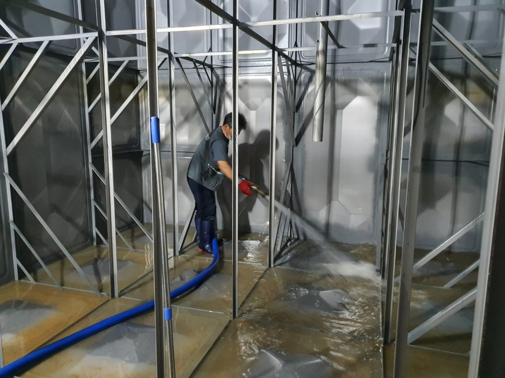

저수조를 사용하는 건물의 음용수 위생을 지키는 법정 의무 관리. 정기 청소·소독과 수질검사, 건물 전반의 방역까지 한 번에 대행해 안전한 물과 쾌적한 환경을 유지합니다.

※ 저수조를 통해 물을 공급하는 대상은 반기 1회 이상 청소와 위생 점검, 연 1회 수질검사를 받아야 합니다. 미이행 시 과태료 대상이 될 수 있으며, 대상·주기는 건물 조건에 따라 다릅니다.
저수조 내부를 비우고 세척·소독해 침전물과 오염을 제거합니다.
법정 항목으로 수질을 검사하고 청소 전·후를 사진으로 남깁니다.
반기 청소·연 수질검사 주기를 관리하고 기한 전에 안내합니다.
건물 정보만 알려주시면 청소·수질검사 주기와 비용을 안내해 드립니다.